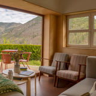

Suite Tentilhão
Suite principal com cama king-size, varanda panorâmica sobre os castanheiros e salamandra de montanha.A mais espaçosa acomodação do Solar, a Suite Tentilhão homenageia o pássaro cantor das florestas de Manteigas. Apresenta vigas aparentes em madeira de castanho, detalhes em linho e burel tradicional, e uma generosa varanda privativa onde o café da manhã ganha um horizonte incomparável sobre o souto.
Comodidades & Destaques
- Cama king-size + cama individual (até 4 hóspedes)
- Salamandra de montanha, ar condicionado e aquecimento
- Varanda com vista panorâmica para o bosque de castanheiros
- Pequeno-almoço serrano incluído e Wi-Fi fibra gratuito